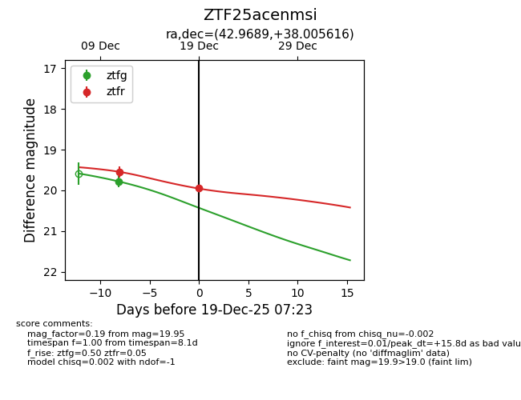
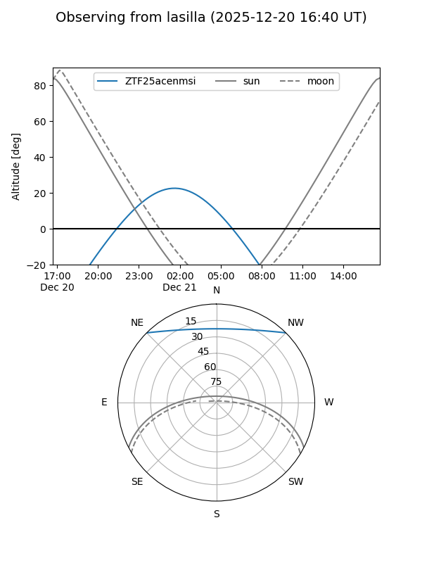
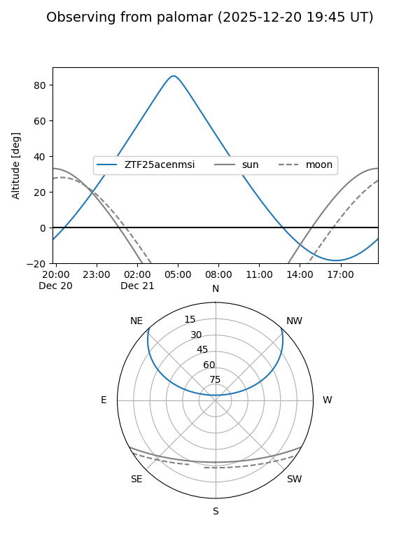
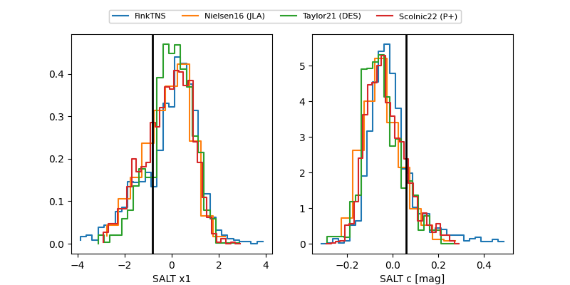

ZTF25acenmsi
Target ZTF25acenmsi at 2025-12-31 18:00
Aliases and brokers:
FINK: link
Lasair: link
ALeRCE: link
alt names
ZTF25acenmsi (ztf,fink_ztf)
Coordinates:
equatorial (ra, dec) = 42.9689,+38.00562
equatorial (HMS+DMS) = 02:51:52.53,+38:00:20.22
galactic (l, b) = (147.6466,-19.01873)
Flags:
Photometry:
last ztfg=19.78, ztfr=19.95
1 ztfg, 2 ztfr detections
Lightcurve

Visibility


Additional plots
